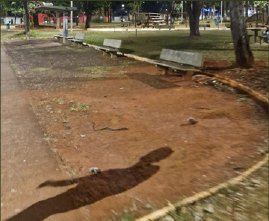
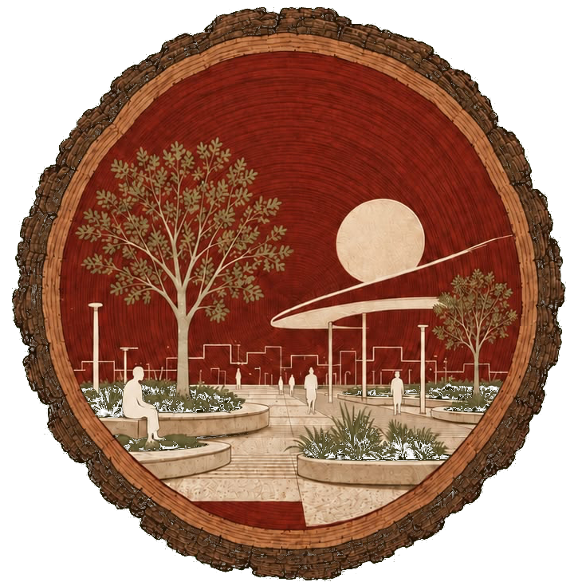
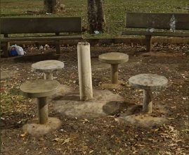
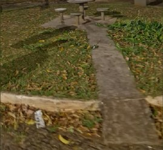
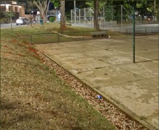
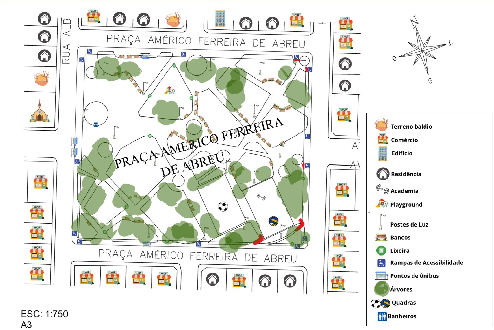

Pisos faltando
Em alguns trechos o caminho está sem revestimento, com terra exposta e desnível.

ECHINATAProjeto interdisciplinar · Uberlândia, MG
Estamos repensando a Praça Américo Ferreira de Abreu com acessibilidade, natureza e tecnologia. E a sua voz é parte do projeto.
O diagnóstico
Visitamos o local, mapeamos tudo e registramos o que precisa de cuidado. Estes são os principais pontos que o projeto quer resolver.

Em alguns trechos o caminho está sem revestimento, com terra exposta e desnível.

O mobiliário de convivência está danificado e pede reposição.

Rampas e caminhos que não seguem as normas técnicas, quando existem.

Piso e pintura em péssimo estado de conservação.

As propostas
Arquitetura, Engenharia Mecânica, Engenharia da Computação e Sistemas de Informação projetam juntas, em parceria com a Prefeitura de Uberlândia.
Novos pisos, calçadas mais largas e sem obstáculos, rampas conforme a norma, reorganização dos caminhos e da iluminação, banheiros acessíveis, bebedouros e mobiliário urbano novo.
Entrega: projeto de revitalizaçãoPergolado inteligente: estrutura em leque que abre sozinha nos momentos de muito sol, gerando sombra, e se recolhe quando o sol baixa. Placas de policarbonato com proteção UV.
Entrega: projeto mecânico 3DAutomação do pergolado com microcontroladores (Arduino), sensores climáticos para controle de sombreamento e infraestrutura de rede e Wi-Fi na praça.
Entrega: automação e conectividadeTotem digital e painel online com temperatura, umidade e fluxo de pessoas em tempo real, mais um canal direto para você avisar sobre problemas. É este site.
Entrega: plataforma e dashboardsCentral de novidades
Atualizações do projeto e da praça, num só lugar.
Ouvidoria
Banco quebrado, lâmpada apagada, buraco no caminho, ideia de melhoria... Sua mensagem chega direto à equipe do projeto.
Participe
Escolha até 3 prioridades. Os resultados ajudam a equipe a decidir por onde começar.
Em breve
Com os sensores instalados, esta página mostrará as condições da praça em tempo real, para você escolher o melhor horário de ir.
Valores ilustrativos de layout. Os dados reais virão dos sensores da proposta de Engenharia da Computação.
Quem somos
Arquitetura e urbanismo sustentáveis. O nome vem do pau-brasil (Paubrasilia echinata), símbolo de origem, identidade e território. Nosso símbolo é um corte do tronco que guarda uma praça viva e humanizada no centro.